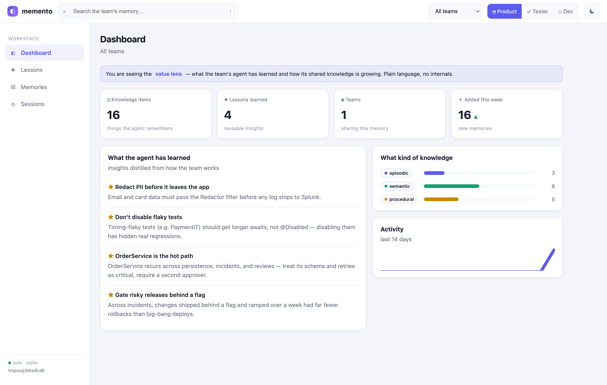
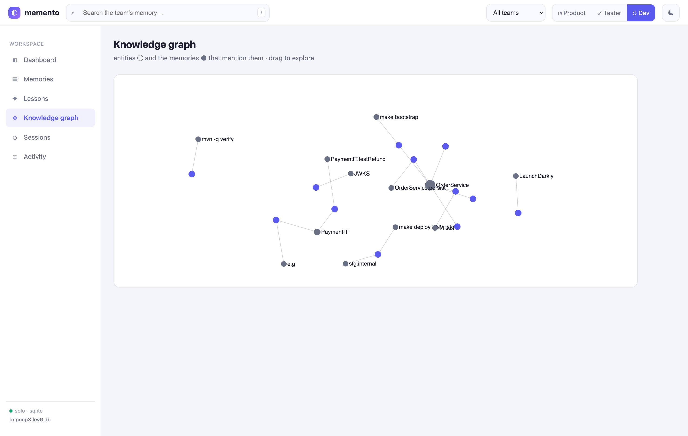
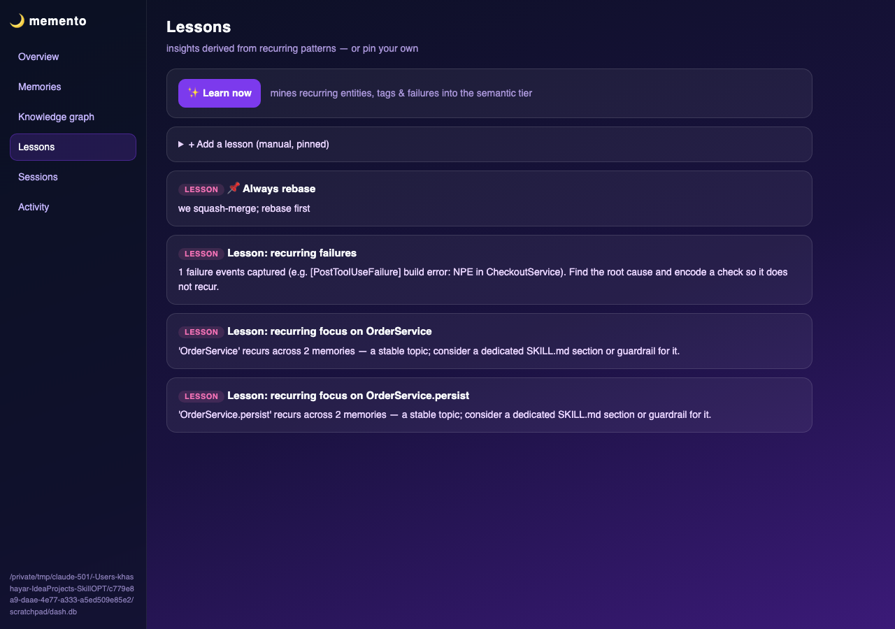

A practical guide to Memento — the nightly self-evolution engine that turns your team's daily work into lasting, reviewed improvements to your Devin skills. For product owners, testers, and developers alike.
You've spent weeks carefully crafting the perfect skills and prompts for your AI coding assistant — code-review rules, architecture guidelines, testing standards, coding conventions. You hand them over once, and they sit there, frozen in time.
Microsoft's SkillOpt gave us the core engine: the harvest → mine → replay → gate loop that turns session history into validated skill improvements. What we built on top is the integration layer — everything needed to make it actually work inside a real development environment running Devin:
devin mcp addWe built Devin-specific adaptations to bridge Microsoft's engine — whose reference harness uses the Claude Code transcript format — with Devin's architecture:
~/.local/share/devin/cli/transcripts/*.json, converted to Claude Code-compatible JSONL~/.config/Devin/User/workspaceStorage/*/workspace.jsonmemento_adopt, evolved skills automatically sync to .devin/skills/devin mcp add memento when Devin CLI is detected on PATHdevin-rules.snippet.md tells Devin when to offer sleep tools and how to use them effectivelyThis blog documents that fork — not the upstream Microsoft research, but the practical integration we built on top of it to make Memento work inside Devin.
Memento is our nightly, offline self-evolution engine for local coding agents.
It's built on SkillOpt, a Microsoft Research project (arXiv 2605.23904)
that applies machine-learning discipline — scored rollouts, bounded edits, and held-out validation gates — to
the text inside your SKILL.md files, without touching any model weights.
Think of it like this: every day you work with Devin, you're generating valuable training signal — recurring tasks, patterns, corrections, successful approaches. Without Memento, all of that signal vanishes. With it, a nightly cycle harvests that experience and uses it to make Devin measurably better at your work.
One "night" runs this pipeline automatically:
~/.local/share/devin/cli/transcripts/*.json with real user↔agent turns.devin/skills/ used as training signalUnlike naive self-improvement loops, Memento uses a held-out validation gate. A candidate skill edit is only accepted if it strictly improves performance on tasks your agent hasn't seen during training. This means:
You work on a Spring Boot microservices project. Every day you ask Devin to: review PRs against SOLID principles, generate JPA entities, write Mockito tests. These are your recurring tasks.
After a few nights of Memento, the agent has mined those patterns and
evolved the code-review, code-generator, and
test-generator skills to be precisely tuned to your codebase's
conventions, not just generic Java best practices.
You manage multiple repos (backend services, UI apps, automation). Skills are
centralized in ~/.memento/ and shared across all projects.
Memento evolves them based on work happening across all projects,
not just one — Devin learns patterns that work everywhere.
A new developer joins and opens the project with Devin. They immediately get an AI assistant that already knows your team's conventions, your preferred patterns, and common pitfalls — because those are encoded in evolved SKILL.md files, not scattered in Confluence docs nobody reads.
Most teams spend hours tweaking system prompts manually. With Memento,
your prompts tune themselves. Run memento_run after a productive
week and memento_adopt to apply. The whole cycle is one command and
a quick review.
Memento isn't only for developers. Anyone on the team who does the same kind of task over and over in Devin gets sharper at it, because the engine learns from what you keep, edit, and reject. Here's what it means for three common roles — in plain terms.
Here's the same machinery up close. A team is building "Instant Payout" — withdraw funds in seconds, capped by a per-day SEPA limit. Three people touch it, and each produces a different correctness signal the validation gate knows how to use.
There's no test suite for a user story, so this lands on the judge branch: a rubric is derived from the task — mined from the parts Priya keeps correcting — and an edit ships only if it scores higher.
{
"taskKey": "general:implement:acceptance-criteria",
"verifier": "judge",
"success": null, // deferred to the judge
"rubric": [
"States the per-day SEPA limit and over-limit behavior",
"Covers the rejected-payout path, not just happy path",
"Lists the analytics events to emit"
]
}
Tom has the strongest signal on the team: his output runs. Pass, fail, or flaky is a hard, checkable result — no judge needed. An edit is accepted only if its tests actually pass.
{
"taskKey": "python:test:instant-payout",
"verifier": "tests",
"success": true,
"evidence": "12 passed, 0 failed (incl. over-limit + auth-fail)",
"reference": { "repro": "rtk pytest tests/payout -q" }
}
@Transactional{
"taskKey": "java:implement:payoutservice",
"verifier": "build",
"success": true,
"evidence": "BUILD SUCCESS",
"reference": { "repro": "rtk mvn verify -pl payout-service" }
}
| Role | Recurring task | Verifier | Signal strength |
|---|---|---|---|
| 📐 Product Owner | …:acceptance-criteria | judge | Soft — rubric mined from edits |
| 🔬 Tester | …:test:instant-payout | tests | Hard — runnable pass/fail |
| ⚙️ Developer | …:implement:payoutservice | build | Hard + rejected-diff behavior |
Beyond the benchmark numbers, here's the progression you can expect as Memento runs on your real sessions.
Before, every code review session started with the agent re-discovering your project structure and conventions. After the first sleep cycle, it already knows your package layout, your naming patterns, your preferred error handling style — because it mined them from your past sessions and baked them into the skill.
Instead of writing "generate a Spring Boot service with repository, DTO, validator, and Mockito tests following our standards", you write "generate UserService". The evolved skill already carries all the context. Your prompts shrink because the skill has absorbed your patterns.
You used to correct the same things every session — "don't use field injection", "always add @Transactional on service methods", "use ResponseEntity not raw objects". Sleep mines those corrections from your saved memories and encodes them permanently into the skill. You stop seeing the same mistake twice.
They get an AI assistant that already knows your team's conventions — not because someone wrote documentation, but because two months of real sessions were consolidated into the skills. The agent teaches the new developer your standards before the new developer has to ask.
Memento is integrated as an MCP server in Devin, giving you 24 tools directly in your Devin chat — the sleep-cycle tools that evolve your skills, plus a full set of built-in memory tools (see Built-in Memory below).
memento_adopt.# Just ask your AI assistant: "run memento_harvest to show me what recurring tasks have been mined"
"run memento_dry_run to preview what would change in my skills" # Output example: # [harvest] agentmemory: 3 sessions, skills: 14, logs: 8 → 25 synthetic sessions # [engine] nights so far: 0 # project: /your/project # recurring tasks found: code-review (12x), test-generator (8x)
"run memento_run with mock backend to stage a proposal" # Review the staged proposal, then: "run memento_adopt to apply the evolved skill" # The updated SKILL.md is immediately available in your workspace!
backend: "mock" (no API cost) to verify the pipeline works —
no API key needed. The mock backend is enough to see the full harvest → mine → stage cycle in action.
Skills become a living record of your team's best practices, continuously refined from real work — not a wiki that goes stale in 3 months.
Every week your agent gets a bit better at your recurring tasks. After a month, the difference is noticeable. After a year, it's remarkable.
The validation gate means skills only accept edits that strictly improve. You review before adopting. Safe to run every night.
Runs as an MCP server. No separate tools, no new UIs. Just ask your AI assistant to run it from your normal chat window.
Once the MCP server is registered (via devin mcp add memento),
all five tools are available directly in your Devin chat.
No separate CLI, no scripts to run manually — just talk to Devin.
Start here. This shows you how many nights have run and whether there is a staged skill proposal waiting for your review.
"run memento_status" # Example output: # [harvest] agentmemory: 3 sessions, skills: 14, logs: 8 → 25 sessions # [engine] nights so far: 0 # no staged proposals yet
Before committing to a full cycle, run a dry run. It goes through the entire harvest → mine → replay loop and tells you what recurring tasks it found and what edits it would propose — without writing anything.
"run memento_dry_run" # Shows recurring tasks found in your sessions: # e.g. code-review (12x), test-generator (8x), entity-generation (5x)
This runs the real cycle and stages a proposal for your review. Nothing changes in your live skills until you explicitly adopt it — you always get to review first.
"run memento_run" # Runs harvest → mine → replay → validate → stage # When done: "staged proposal ready — review with memento_status, adopt with memento_adopt"
After reviewing the staged proposal, apply it. The updated SKILL.md is written and picked up by Devin immediately — no restart needed.
"run memento_status" # read the proposed changes "run memento_adopt" # apply them to your SKILL.md
Memento now ships its own memory engine — no external memory server, no Node. It's stdlib-only (SQLite + a tiny web server): hybrid BM25 + semantic vector search, four memory tiers with auto-consolidation & decay, a knowledge graph, auto-derived lessons, namespaces, an audit log, and snapshots — all browsable in a local web dashboard.
~/.memento/memory.dbMEMENTO_DB_URL to a shared Postgres (pgvector)namespaceSame tools and the same dashboard in both modes — switching from solo to a shared team brain is a single environment variable.



python3 mcp_server.py --web --port 3114 # → http://127.0.0.1:3114
Memento turns Devin from a static tool into a self-improving partner. Every day you use Devin, you're building training signal. Every night, that signal gets turned into a better version of your skills — validated, staged for review, and ready to adopt.
.devin/skills/ on adopt